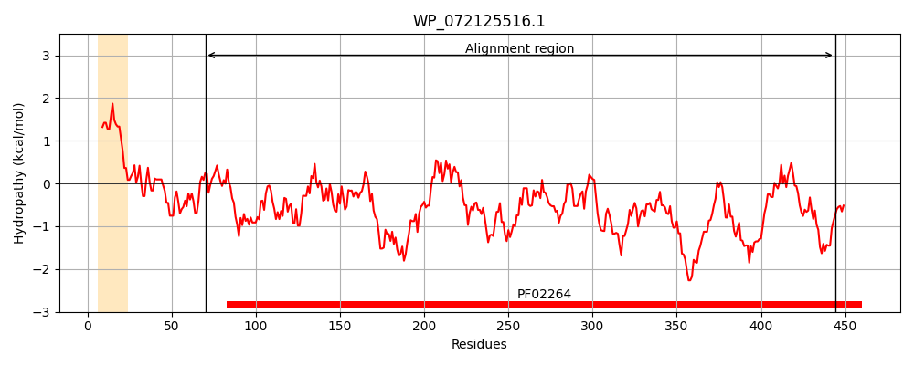
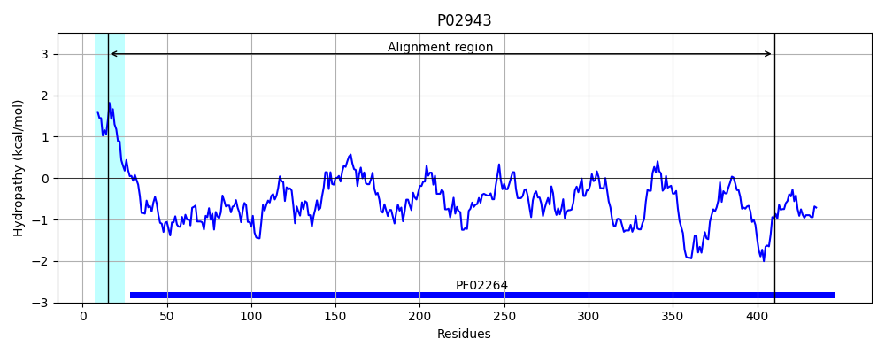
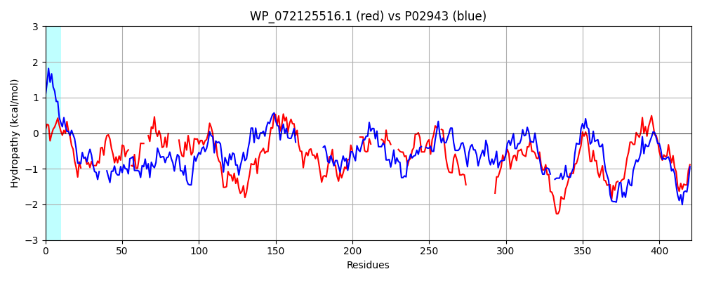

Hit Accession: P02943
Hit TCID: 1.B.3.1.1
Hit Description: gnl|BL_ORD_ID|8239 gnl|TC-DB|P02943|1.B.3.1.1 MALTOPORIN PRECURSOR (MALTOSE-INDUCIBLE PORIN) (LAMBDA RECEPTOR PROTEIN) - Escherichia coli.
Mach Len: 421
e:0.000000
Query TMS Count : 1
Hit TMS Count: 1
TMS-Overlap Score: 0.000000
Predicted Substrates:CHEBI:23489;alpha-cyclodextrin, CHEBI:62009;maltoheptaose heptasaccharide, CHEBI:6668;maltose, CHEBI:17306;maltose, CHEBI:6672;alpha-maltotriose, CHEBI:6671;maltotetraose, CHEBI:61996;maltopentaose pentasaccharide, CHEBI:22582;antimicrobial agent
BLAST Alignment:
Score: 215 , Bit scores: 87 bits, E-value: 1.3e-18, Alignment length: 421, Percentage identity: 24
Query: 70 AASPDMAIPFGLKFSGYARYGAHF--QTGDQKYVGVDGSYNGASAIGRLGNESNG-GEFQISKAF--KSAQGAIWDLNVMF------DHWSDEVNLKKAYVGVTNVLDSNPNAYIWAGRDFHQRPQQGINDYFWMNHDGQGAGVKNFDIGGVQFDVATVSQVKSCSPEVMADETNPSRITCTGSSDTGDNGHYALTTKTHN----IKAGPIDV------EVYANYG----FDSKAVDSDARLEAWQGGLVLSHTND--SGVNKVILRYSDNSDNS------------------VYNKTDDLTTVYASFEGSHKFTQQAQIEYLLAFHDYDNGKDNTDNRKNYGAIVRPMYFWNDVHSTWLEAGYQRVDYDQGGD-NHGWKLTLSQNIAIGMGPEFRPMLRFYVTGGQVDNEHTAKVNGTQD 444
AA A + F GYAR G + G+Q+ GA + RLGNE E ++ + + + +D NV + D + + ++A V N+++ P + IWAG+ F+QR + D+++ + G GAG++N D+G + +A ++ GSS N Y T +T N ++ +++ E+ +YG D+ + A + W HT G NK +++Y+ +S S YN ++ + G+ + Y+ + D + DN + K + +RPMY W + ST +E GY V+ + GD N+ +K+TL+Q G RP +R + T + D + G D
Sbjct: 15 AAGVMSAQAMAVDFHGYARSGIGWTGSGGEQQCFQT----TGAQSKYRLGNECETYAELKLGQEVWKEGDKSFYFDTNVAYSVAQQNDWEATDPAFREANVQGKNLIEWLPGSTIWAGKRFYQRHDVHMIDFYYWDISGPGAGLENIDVGFGKLSLAATRSSEA-----------------GGSSSFASNNIYDYTNETANDVFDVRLAQMEINPGGTLELGVDYGRANLRDNYRLVDGASKDGWL--FTAEHTQSVLKGFNKFVVQYATDSMTSQGKGLSQGSGVAFDNEKFAYNINNNGHMLRILDHGAISMGDNWDMMYVGMYQDIN--WDNDNGTKWWTVGIRPMYKWTPIMSTVMEIGYDNVESQRTGDKNNQYKITLAQQWQAGDSIWSRPAIRVFATYAKWDEKWGYDYTGNAD 410 | Protein Hydropathy Plots: |
|---|
|  |  |
Pairwise Alignment-Hydropathy Plot:
|
|---|
|  |